cyrxdzj的文化课学习笔记 数学004 函数
创建 内容更新 导出 2023-10-09 07:01:12 2023-11-22 17:42:50 2024-03-17 11:43:52 原文链接：https://blog.cyrxdzj.eu.org/2023-10-09-CyrxNote-Math-004/
作者：cyrxdzj
本文件仅为静态文件。如有条件，建议访问原文链接。
本文含有较多图片，单击可以放大。
1、思维杂题
已知 $A=B=${$0,1,2,3$}，则 $f:A\rightarrow B$ 有多少种值域？
可以发现，值域一定是集合 $B$ 的子集，同时值域不能为空集。而一个集合的非空子集的数量是 $2^n-1$ 个，所以值域有 $15$ 种。
若两个函数的对应关系相同，值域也相同，但定义域不同，则称这两个函数为“同族函数”。那么，函数 $y=x^2,x\in${$-1,0,1,2$} 有多少个同族函数？
可以很容易地得到，该函数的值域为 {$0,1,4$}，由此可知定义域符合如下性质：
- $0$ 必须出现；
- $\pm1$ 至少出现一个，也可以都出现，共 $3$ 种可能；
- $\pm2$ 同上；
- 其它数均不能出现。
综上，相同的值域，定义域有 $9$ 种可能。
但是题中要求定义域不同，而上面 $9$ 种定义域有一种其实就是题中提到的。因此，答案为 $8$。
已知函数 $f(x)$ 的定义域为 {$1,2,3,4$}，值域为 {$7,8,9$}，且对任意的 $x<y$ 都有 $f(x)\le f(y)$，则满足条件的不同函数共有多少个？
值域中每一个数，都至少有一个定义域中的数与之对应；而定义域中的每一个数，都恰好对应一个值域中的数。分析题目，题中要求定义域中有 $4$ 个数，可值域只有 $3$ 个数，换句话说，恰好有 $2$ 个定义域的数，对应的值域中的数，是同一个。
而题中还说 $x<y,f(x)\le f(y)$，结合上文，我们可以列出不等式：
$f(1)\le f(2)\le f(3)\le f(4)$
这个式子中的 $3$ 个不等号有且只有 $1$ 个实际上是取等号的。如果有大于 $1$ 个不等号实际上取等号，就会导致函数可能的值的数量小于 $3$，值域中有数找不到定义域中的数与之对应；而如果没有不等号实际上取等号，就会导致 $4$ 个 $x$ 产生了 $4$ 个 $f(x)$，可值域的大小才 $3$ 个。
而任何一个不等号实际上取了等号，我们都能构造出对应关系。
因此，满足条件的不同函数，有 $3$ 个。
2、与一元二次函数结合起来
已知函数 $f(x)=x^2-4x$ 在 $[0,m]$ 上的值域为 $[-4,0]$，则实数 $m$ 的取值范围是？
首先，通过图象，我们可以看出 $x^2-4x$ 的情况：
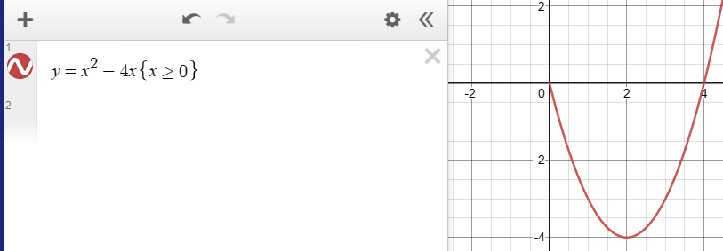
可以计算得出，当 $x=0$ 时，函数值为 $0$。当 $x=2$ 时，函数值取到最小值，为 $-4$。当 $x=4$ 时，函数值再次为 $0$。
因此，可以得出 $2\le m\le4$。如果 $m$ 太小，函数值就不够小；如果 $m$ 太大，函数值就会超过 $0$。
3、当给出的函数不标准的时候
有些问题给出的函数，不会给 $f(x)$ 这种标准的形式，而是各种各样乱七八糟的形式。
已知 $f(2x-1)=4x^2$，则下列结论中正确的是：
A. $f(3)=-9$
B. $f(-3)=-4$
C. $f(x)=x^2$
D. $f(x)=(x+1)^2$
对于这类问题，首先为了避免混淆，先将题干中给出的函数变量改个名字，变成 $f(2a-1)=4a^2$。
然后，对于每个选项，挨个儿解出函数括号内的数对应的 $a$ 是多少。
例如，A 选项，我们可得 $2a-1=3$，解得 $a=2,4a^2=16\neq-9$。A 选项错误。
B 选项，我们可得 $2a-1=-3$，解得 $a=-1,4a^2=4\neq-4$，B 选项错误。
C 和 D 选项，我们可得 $2a-1=x$，稍稍细心计算，得 $a=\frac{x+1}{2}$，由此可得 $4a^2=(x+1)^2$，D 选项正确而 C 选项错误。
对于此类问题，应将题干中给出的原函数传入的参数（即 $2a-1$）和选项中给出的待验证函数传入的参数（即 $3$、$-3$、$x$）进行比对，要求两者相等，得出原函数传入的参数中的字母具体是什么（即，当 $2a-1=3$ 时 $a=2$），然后将字母代入计算。为避免混淆，可以将原函数中的字母统一更名。
需要注意的是，有些时候以上方法并不适用，例如：
已知 $f(x-\frac{1}{x})=x^2+\frac{1}{x^2}$，求 $f(x)$。
对于这道题，我们可以使用初中时学过的完全平方公式，发现 $x^2+\frac{1}{x^2}=(x-\frac1x)^2+2$，而 $f(x-\frac1x)=(x-\frac1x)^2+2$ 意味着 $f(x)=x^2+2$。
对于这种情况，可以尝试推出函数参数与函数表达式之间的关系，具体情况具体分析。
4、仔细分析更复杂的函数
设 $f(x)=\frac{1+x^2}{1-x^2}$，则下列结论正确的是？请注意本题多选。
A. $f(-x)=-f(x)$
B. $f(\frac{1}{x})=-f(x)$
C. $f(-\frac{1}{x})=f(x)$
D. $f(-x)=f(x)$
我们可以发现，$x^2=(-x)^2$，$x$ 的正负性并不影响平方的结果。因此，$\frac{1+x^2}{1-x^2}=\frac{1+(-x)^2}{1-(-x)^2}$，由此可得 $f(-x)=f(x)$，A 选项错误，D 选项正确。
顺便说一句，这样的函数叫做偶函数，函数关于 $y$ 轴对称，图象如下：
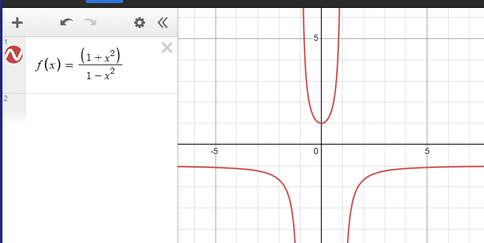
同时，我们可以得到 $f(\frac{1}{x})=f(-\frac{1}{x})$，这一条待会有用。
接下来，细心推出以下式子：
$f(\frac{1}{x})\\=\frac{1+(\frac{1}{x})^2}{1-(\frac{1}{x})^2}\\=\frac{x^2+1}{x^2}\div\frac{x^2-1}{x^2}\\=\frac{1+x^2}{x^2-1}$
至此，函数 $f(\frac{1}{x})$ 计算完毕。
而函数 $f(x)=\frac{1+x^2}{1-x^2}$，可以很容易地发现 $f(\frac{1}{x})=-f(x)$，B 选项正确，C 选项错误。图象如下：
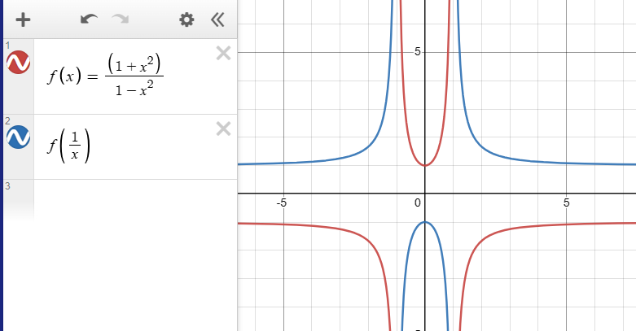
可以恰好发现 $f(x)$ 与 $f(\frac{1}{x})$ 关于 $x$ 轴对称。
对于此类问题，应细心审题，谨慎作答，答后验证。
5、分段函数之对齐分段
试画出函数 $f(x)=x|x|$ 的大致图象。
我们知道，绝对值本质上也是一个分段函数，可以表示为 $f(x)=\left\lbrace\begin{matrix}x,&x\ge0,\\-x,&x<0,\end{matrix}\right.$。
其实，任何一个函数，都一定可以转换成分段函数，分多少段、每一段的范围和解析式是什么，随你喜欢可以按照题目要求来。比如，$f(x)=x$ 也可表示为 $f(x)=\left\lbrace\begin{matrix}x,&x\ge0,\\x,&x<0,\end{matrix}\right.$。
这样，我们便可以列出下表：
| $f(x)=x$ | $f(x)=\vert x\vert$ | $f(x)=x\vert x\vert$ | 达成条件 |
|---|---|---|---|
| $x$ | $x$ | $x^2$ | $x\ge0$ |
| $x$ | $-x$ | $-x^2$ | $x<0$ |
可以发现，当 $x\ge0$ 时，函数为开口向上的对称轴为 $x=0$ 一元二次函数的一部分；当 $x<0$ 时，函数为开口向下的对称轴为 $x=0$ 一元二次函数的一部分。图象为：
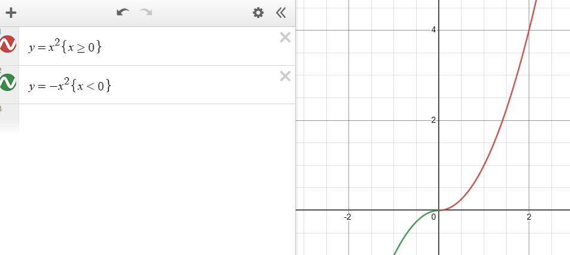
对于这类题目，应将函数整个式子分离成多个分段函数（分离函数），对于每个分段函数，继续细分分段（即使这会导致有些分段解析式相同）（对齐分段），列出表格，再将多个函数通过一些运算符号拼在一起（合并函数），再根据分段条件和合并后的解析式特点画出函数图象。
再看看更简单的。定义符号函数 $sgn\space x=\left\lbrace\begin{matrix}1,&x>0,\\0,&x=0,\\-1,&x<0,\end{matrix}\right.$，试画出 $f(x)=|x|sgn\space x$ 的大致图像。
老方法，分离函数，对齐分段，得出下表：
| $f(x)=\vert x\vert$ | $f(x)=sgn\space x$ | $f(x)=\vert x\vert sgn\space x$ | 达成条件 |
|---|---|---|---|
| $x$ | $1$ | $x$ | $x>0$ |
| $0$ | $0$ | $0$ | $x=0$ |
| $-x$ | $-1$ | $x$ | $x<0$ |
我们可以发现函数完完全全就是 $f(x)=x$ 诶。函数图象如下：
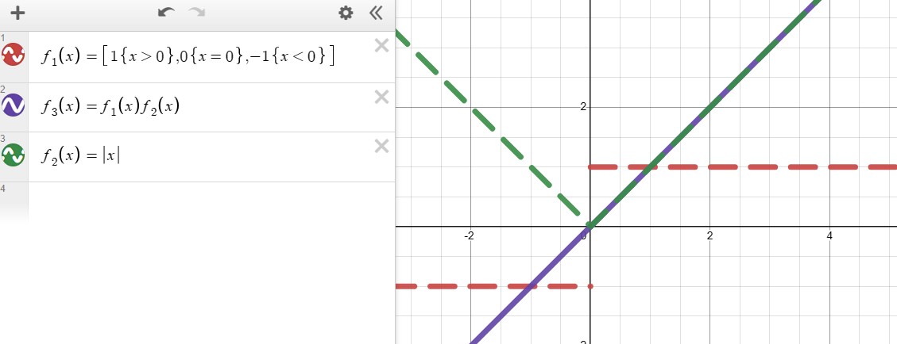
上图中，红色线和绿色线是拆分后的函数，紫色线是合并后要求的函数。函数与颜色的对应关系在左边有写。
6、分段函数进阶
设 $f(x)=\left\lbrace\begin{matrix}(x+1)^2, &x\le0, \\\frac{4}{x}, &x>0,\end{matrix}\right.$，则：
$y=f(x)$ 与 $y=a$ 的图象有 $2$ 个交点，$a$ 的范围是？
对于这一题，我们可以发现，$f(x)$ 函数的左边部分是对称轴为 $x=-1$ ，顶点为 $(-1,0)$ 的二次函数，右边部分是反比例函数。
可以发现，当 $a<0$ 时，没有交点；
当 $a=0$ 时，只有一个交点，就是二次函数顶点 $(1,0)$。
可以发现当 $x=0$ 时 $(x+1)^2=1$，而当 $x=0$ 时 $f(x)$ 执行的是左部分的二次函数，因此，可以想象得出，当 $0<a\le1$ 时，$y=a$ 与 $f(x)$ 有 $3$ 个交点，其中二次函数部分有 $2$ 个（对称轴左边 $1$ 个，右边 $1$ 个），反比例函数部分有 $1$ 个。
当 $a>1$ 时，有 $2$ 个交点。其中二次函数部分有 $1$ 个（对称轴左边 $1$ 个，右边 $0$ 个），反比例函数部分有 $1$ 个。
图象：
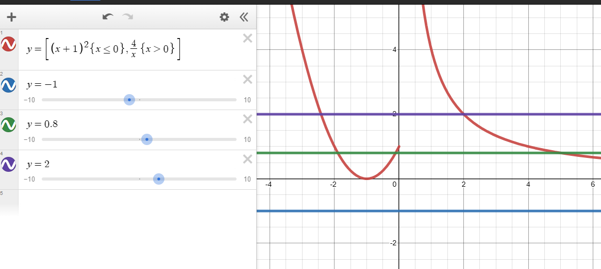
对于此类问题，应画出大致图象，注意 $x$ 上的分段，并根据关键信息对 $y$ 进行分段。
解不等式：$0\le f(x)\le1$。
这相当于以下两个不等式的解集的并集：
$x\le0$ 且 $0\le(x+1)^2\le1$，解得 $-2\le x\le0$；
$x>0$ 且 $0\le\frac{4}{x}\le1$，这也很容易地解得 $x\ge4$。
综上，不等式解集为 $[-2,0]\cup[4,+\infty)$。
解不等式：$0\le f(f(x))\le1$。
嗯，函数嵌套了起来。
我们注意到，无论何时，一定有 $f(x)\ge0$。并且当且仅当 $x=-1$ 时，$f(x)=0$。
当 $x=-1$ 时，$f(f(x))=f(0)=1$，符合不等式。
当 $x\neq-1$ 时，有 $f(x)>0$，这意味着 $f(f(x))$ 一定是分段函数的右边的反比例函数部分。因此，根据 $0\le f(f(x))\le1$ 可以得到 $f(x)\ge4$。
根据图象，我们可以发现，当 $x<-1$ 时，当且仅当 $x\le-3$ 时 $f(x)\ge4$。当 $-1\le x\le0$ 时，二次函数对称轴右边的部分没有值大于 $4$ 的地方。当 $x>0$ 时，当且仅当 $0<x\le1$ 时 $f(x)\ge4$.
综上，解得 $x\le-3$ 或 $x=-1$ 或 $0< x\le1$。
对于此类问题，应通过分类讨论的方式解决，注意分段函数的分段条件中的等于号。
7、找规律
已知分段函数 $f(x)=\left\lbrace\begin{matrix}x^2, &x<1, \\f(x-1)-1, &x\ge1,\end{matrix}\right.$，求以下函数的值：
$f(2)$
$f(2023)$
$f(2023.6)$
$f(-0.6)$
对于第 1 题，可以爆算，$f(2)=f(1)-1=f(0)-1-1=0^2-1-1=-2$。
对于第 2 题，显然不能爆算了，但是我们可以根据上一题找到规律，可以发现 $f(2023)=f(2022)-1=f(2021)-1-1=\dots =f(0)-2023\times1=-2023$，每计算一层，$f$ 中的参数都会减 $1$，同时式子后面就会多个 $-1$。
对于第 3 题，可以发现 $f(2023.6)=f(2022.6)-1=f(2021.6)-1-1=\dots =f(0.6)-2023\times1=0.6^2-2023=-2022.64$。有点难，但细心分析应该不会有太大问题。
对于第 4 题，一上来就有 $x<1$，所以 $f(-0.6)=(-0.6)^2=0.36$。
经计算机验证，这是正确的：
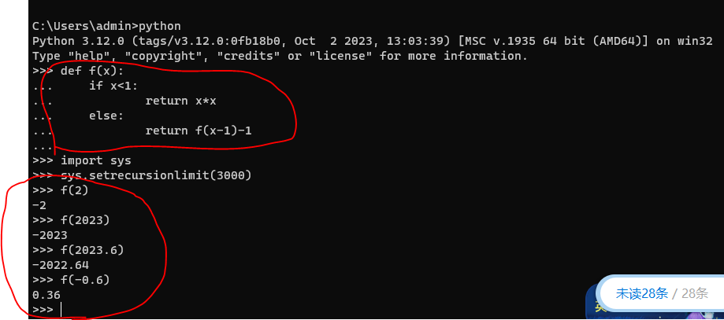
当然考试时没有计算机的。
对于这类问题，可以稍微爆算几轮，发现规律，同时根据函数解析式验证规律。
8、将函数分成若干个部分，以分析图象
例如，指出函数 $f(x)=\vert x+2\vert$ 和 $f(x)=\vert x^2-3x+2\vert$ 的单调区间。
首先，我们先看看 $f_1(x)=x+2$ 的图象。很显然，这就是一个一次函数的图象。同时，我们可以发现 $f(x)=\vert f_1(x)\vert$（废话）。
然后，我们发现，绝对值符号，就是将函数图象在 $x$ 轴以下的部分翻转过来。因此，$f(x)$ 的图象如图红色实线：
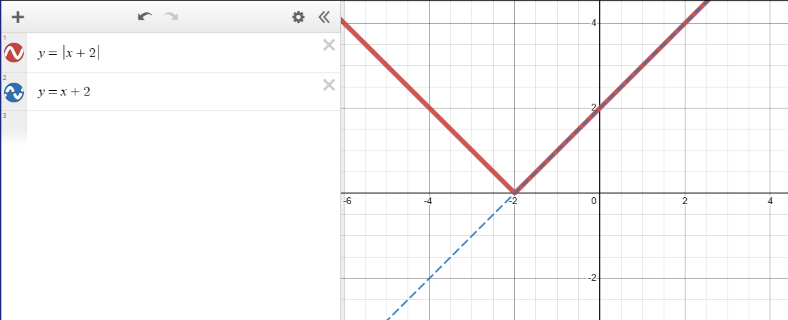
因此，函数在 $(-\infty,-2)$ 单调递减，$[-2,+\infty)$ 单调递增。
我们再看看 $f_2(x)=x^2-3x+2$，这是一个二次函数，对称轴为 $x=1.5$，当 $x=1$ 和 $x=2$ 时函数值为 $0$。而绝对值符号就是将图象在 $x$ 轴以下的部分翻转过来，因此函数图象如下：
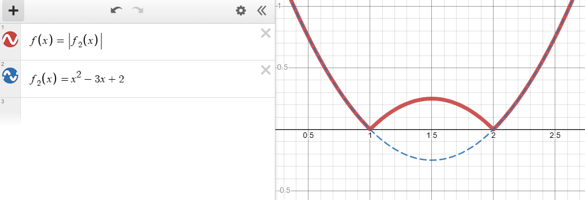
这个图象分析稍微复杂一点。
对于 $(-\infty,1)$，一开始（代表 $f_2(x)$ 的蓝线，下同）就是单调递减，也没被翻转，因此现在还是单调递减；
对于 $[1,1.5]$，一开始是单调递减，但由于被翻转了，所以现在是单调递增；
对于 $(1.5,2)$，一开始是单调递增，但由于被翻转了，所以现在是单调递减；
对于 $[2,+\infty)$，一开始就是单调递增，也没被翻转，因此现在还是单调递增。
分析完毕。
9、分析二次函数的图象
初中时我们学过，二次函数的单调递增递减区间是这个关系：
| 二次项系数（一般记为 $a$）与 $0$ 的关系 | 对称轴左边区域 | 对称轴右边区域 |
|---|---|---|
| $a>0$ | 单调递减 | 单调递增 |
| $a<0$ | 单调递增 | 单调递减 |
已知函数 $f(x)=\left\lbrace\begin{matrix}x^2+4x, &x\ge0, \\4x-x^2, &x<0,\end{matrix}\right.$，若 $f(4-a)>f(a)$，则实数 $a$ 的取值范围是？
分析二次函数时，二次项系数和函数对称轴是很重要的参数。
对于 $x^2+4x$，对称轴为 $x=-2$，因此当 $x\ge0$ 时函数递增。
对于 $-x^2+4x$，对称轴为 $x=2$，因此当 $x<0$ 时函数递增。
当 $x=0$ 时，$x^2+4x=4x-x^2=0$，也就是说，$f(x)$ 整个函数都是递增的。
而 $f(4-a)>f(a)$，也就意味着 $4-a>a$ 即可。实数 $a$ 的取值范围是 $(-\infty,2)$。
若函数 $f(x)=ax^2+(a-3)x+1$ 在 $(-1,+\infty)$ 上单调递减，则 $a$ 的取值范围是？
首先，由于函数在右侧部分单调递减，所以不可能出现 $a>0$ 的情况。
然后，考虑 $a=0$ 时，函数退化为一次函数，即 $f(x)=-3x+1$。此时整个函数都是单调递减的。
最后，考虑 $a<0$ 时，只要函数的对称轴在 $-1$ 的左边（$-1$ 上也可以）。换句话说，不等式组 $\left\lbrace\begin{matrix}a<0\\-\frac{a-3}{2a}\le-1\end{matrix}\right.$ 成立。解得 $-3\le a<0$。
综上，可以发现 $a$ 的取值范围是 $[-3,0]$。
10、对勾函数
形如 $y=k(x+\frac{a}{x})$，其中 $a>0,k\neq0$ 的函数，图象为对勾。
对勾函数是奇函数，分为 $2$ 个部分。每个部分的形状与 $k$ 相关。
| $k$ 与 $0$ 的大小关系 | 左半部分情况 | 右半部分情况 | 例图 |
|---|---|---|---|
| $k>0$ | 当 $x=\frac{a}{x}$ 且 $x<0$ 时，左半部分取得最大值 | 当 $x=\frac{a}{x}$ 且 $x>0$ 时，右半部分取得最小值 | 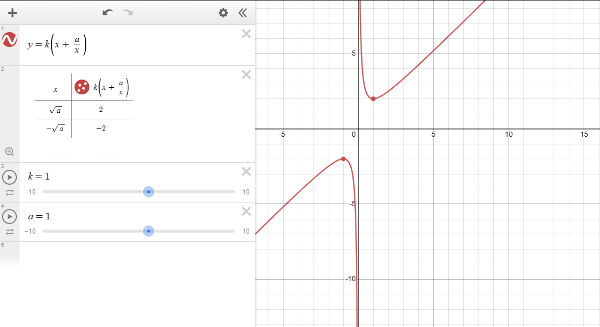 |
| $k<0$ | 当 $x=\frac{a}{x}$ 且 $x<0$ 时，左半部分取得最小值 | 当 $x=\frac{a}{x}$ 且 $x>0$ 时，右半部分取得最大值 | 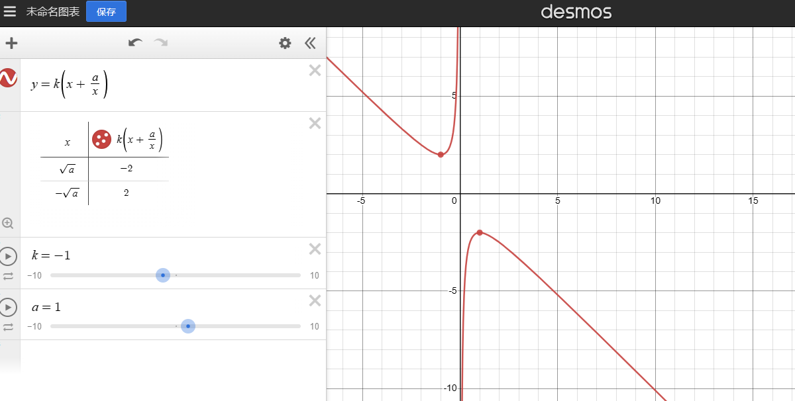 |
可以发现，对勾函数和基本不等式息息相关。
11、函数的平移与翻转
作出函数 $y=\frac{x-1}{x-2}$ 的图象，并写出函数的定义域、单调区间和值域。
通过化简，我们得到 $y=\frac{x-1}{x-2}=\frac1{x-2}+1$。
然后，我们尝试将这个函数从 $y=\frac1{x}$ 这个反比例函数平移出来。
首先，我们先向右移动 $2$ 格。向右移动多少格，函数中的所有 $x$ 就会统一减去多少。注意，是所有的 $x$。这样，我们就得到了 $y=\frac{1}{x-2}$。
然后，再向上移动 $1$ 格。向上移动多少格，函数末尾就会加上多少。这样，我们最终得到 $y=\frac{1}{x-2}+1$。
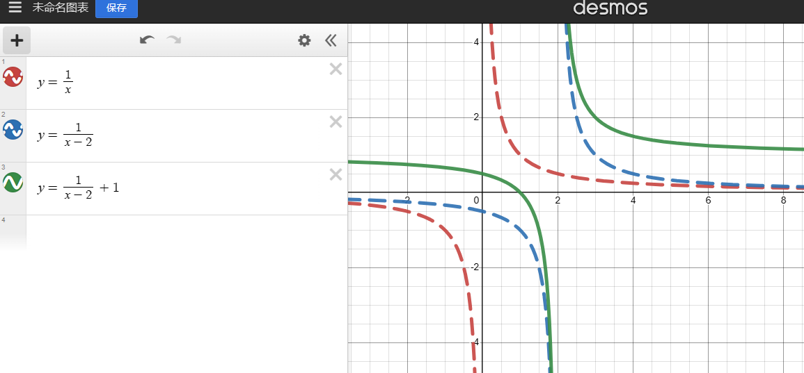
函数平移的同时，定义域、单调区间和值域当然也会随之平移。
事实上，在初中时，我们学的二次函数顶点式，本质上就是平移的产物。
以下所有变化后函数，均基于函数 $f(x)=2x+1$。
| 事件 | 函数的变化 | 变化后函数 |
|---|---|---|
| 向右平移 $a$ 格（等价于向左平移 $-a$ 格） | 所有 $x$ 统一减去 $a$ | $f(x)=2(x-a)+1=2x-2a+1$ |
| 向上平移 $a$ 格（等价于向下平移 $-a$ 格） | 整个函数统一加上 $a$ | $f(x)=2x+1+a$ |
| 左右翻转 | 所有 $x$ 统一变为 $-x$ | $f(x)=2(-x)=1=-2x+1$ |
| 上下翻转 | 整个函数统一变为相反数 | $f(x)=-(2x+1)=-2x-1$ |
12、将带根号的函数转换为二次函数
有些时候函数是带根号的。我们都知道，$x\ge0$ 时 $(\sqrt{x})^2=x$。有时我们可以利用这个特点。
例如，求 $y=2x+\sqrt{1-x}$ 的值域。
首先，我们可以发现 $x\le1$。否则函数将无意义。
然后，我们尝试转换一下。
$y=2x+\sqrt{1-x}\\=2x-2+\sqrt{1-x}+2\\-(2-2x)+\sqrt{1-x}+2$
然后，设 $t=\sqrt{1-x}$。我们可以发现 $t\ge0$，以及：
$y=-(2-2x)+\sqrt{1-x}+2=-2t^2+t+2$，我们要求的就是这个玩意的值域。
$y=-2t^2+t+2$ 的对称轴为 $t=\frac14$，此时 $y$ 有最大值，稍微算算可以得出 $\frac{17}{8}$。由于函数的右边不受限制，所以 $y$ 可以取任意小。
综上，函数的值域是 $(-\infty,\frac{17}{8}]$。
图象为：
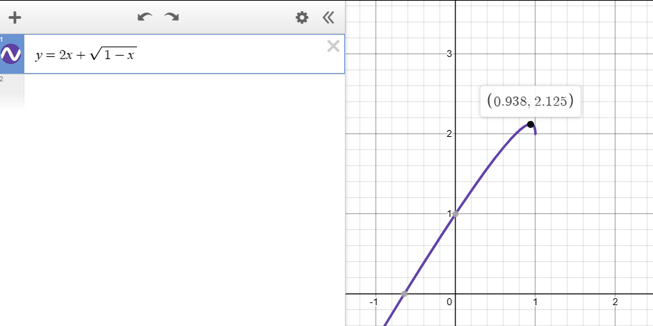
13、究极无敌分类讨论
已知函数 $f(x)=2x^2+2ax+1$，函数 $g(x)=\frac{2-2x}{x}$，设函数 $h(x)=\min\lbrace f(x),g(x)\rbrace(x\neq0)$，分类讨论 $a$ 的值与 $h(x)$ 与直线 $y=0$ 的交点个数。
可以在 desmos 上查看：点击这里。
首先，我们先化简 $g(x)=\frac{2-2x}{x}=\frac{2}{x}-2$，根据函数的平移的知识，可以发现这就是一个反比例函数向下平移 $2$ 格。
显然，当 $x<0$ 时，$g(x)<0$。我们也可以很方便地计算出当 $x>1$ 时，$g(x)<0$；当 $x=1$ 时，$g(x)=0$。图象如下：
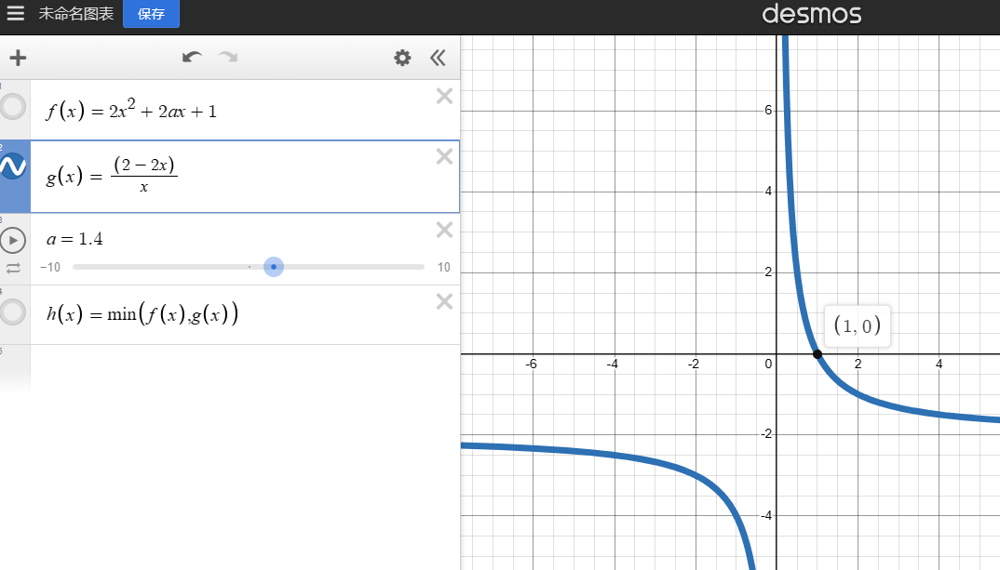
这个性质看似无用，其实大用。显然，由于 $h(x)$ 要求的是最小值，这意味着，在 $x<0$ 和 $x>1$ 这两个段，$h(x)$ 一定不会和 $y=0$ 有交点。因为这两个段 $g(x)$ 小于 $0$，就算 $f(x)=0$，也会因为太大而不计入 $h(x)$。
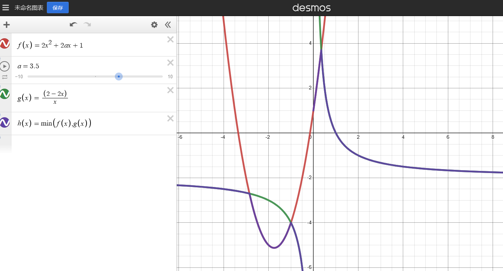
图中的紫色部分就是 $h(x)$。
再看看这个 $f(x)$，可以发现，无论 $a$ 怎么变，$f(x)$ 始终经过一个定点：$(0,1)$。而这个定点在 $y=0$ 的上方。
由此，我们可以分类讨论：
当 $f(x)$ 的对称轴在 $x=0$ 左边或 $x=0$ 上时，显然 $f(x)$ 在 $y$ 轴右边的部分都不会和 $y=0$ 有任何交点。此时答案的交点由 $g(x)$ 创造，只有一个。
当 $f(x)$ 的对称轴在 $x=0$ 右边，但是与 $y=0$ 仍没有交点时。此时答案的交点还是由 $g(x)$ 创造，只有一个。
一个小技巧：有些时候，可以试试利用 $\Delta$ 来解各种情况。
当 $f(x)$ 的对称轴在 $x=0$ 右边，而且与 $y=0$ 有恰好一个交点时。此时需要验证 $f(x)$ 与 $y=0$ 的交点是否确实在 $0<x<1$ 之间。此时 $h(x)$ 与 $y=0$ 有 $2$ 个交点。
当 $f(x)$ 的对称轴在 $x=0$ 右边，而且与 $y=0$ 有 $2$ 个交点，且最右边的交点在 $(1,0)$ 左边时。我们不用列那么长的式子去表示两个交点的坐标。我们其实只需要列 $\Delta>0$ （保证有 $2$ 个交点）、$-\frac{1}{2}a>0$ （保证对称轴在 $x=0$ 右边）和 $f(1)>0$ 即可。
当 $f(x)$ 的对称轴在 $x=0$ 右边，而且与 $y=0$ 有 $2$ 个交点，且最右边的交点恰好在 $(1,0)$ 上时。可以发现，此时 $f(1)=0$，最左边的交点一定在 $x=0$ 和 $x=1$ 之间。此时 $h(x)$ 与 $y=0$ 有 $2$ 个交点。
当 $f(x)$ 的对称轴在 $x=0$ 右边，而且与 $y=0$ 有 $2$ 个交点，且最右边的交点在 $(1,0)$ 右边时。请读者自行思考 $h(x)$ 与 $y=0$ 有几个交点。